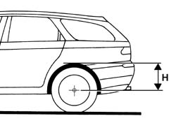

4420A37 rear suspension dampers check vehicle ground clearance
- Path
- Procedures > 44 SUSPENSION AND WHEELS > 4420 REAR SUSPENSION > 4420A rear dampers and springs > 4420A37 rear suspension dampers check vehicle ground clearance
- Kind
- repair procedure (removal / refitting; the operation number is the code)
- Applies to
- all engines; all production periods
- Interactive page
- https://sloeber94.github.io/elrnDB-a156/en/#/3238199
Applies to: all engines; all production periods; only with equipment: Station Wagon
Follow the preliminary instructions below.
Check that the tyre pressures are correct.
Inspect the underbody and remove any dirt, dust, mud or sand.
Remove everything from the luggage compartment which is not part of the vehicle's original equipment.
TEST WITH CAR UNLADEN AND LEVELLED
Place the vehicle on a horizontal plane; do not use the brakes to stop the vehicle, but let it come to a halt by itself, then place the gear lever in first (manual gearbox) or in P (automatic transmission).
Measure levelled distance H with the vehicle unladen without a driver and check that it is within the following limits.
Values for distance H for petrol versions.
 | Measurement | Value | |
|---|---|---|---|
- | H (mm) | 362 ± 8 | |
With unladen vehicle levelled (-) | - | ||
Values for distance H for diesel versions.
| Measurement | Value | |
|---|---|---|---|
- | H (mm) | 367 ± 8 | |
With unladen vehicle levelled (-) | - | ||

Applies to: all engines; all production periods; only with equipment: Station Wagon
TEST WITH CAR FULLY LADEN ON LEVEL
Place a load of 50 kg in the luggage compartment.
Seat three people on the rear seat (or a weight equivalent to 70 kg per person) and two people in the front seats.
In these load conditions, drive the vehicle for 2000 m on a road with an uneven surface.
Place the vehicle on a horizontal plane; do not use the brakes to stop the vehicle, but let it come to a halt by itself, then place the gear lever in first (manual gearbox) or in P (automatic transmission).
Measure levelled distance H without removing the load or the passengers and check that it is within the recommended limits:
| Measurement | Value | |
|---|---|---|---|
- | H (mm) | 354 ± 8 | |
With vehicle fully laden levelled (-) | - | ||
TEST WITH CAR UNLADEN AND LEVELLED
Let the people come out of the vehicle or remove the corresponding weights and remove the load from the luggage compartment.
Drive the vehicle for 2000 m.
Measure levelled distance H with the vehicle unladen without a driver and check that it is within the following limits.
Values for distance H for petrol versions.
| Measurement | Value | |
|---|---|---|---|
- | H (mm) | 362 ± 8 | |
With unladen vehicle levelled (-) | - | ||
Values for distance H for diesel versions.
| Measurement | Value | |
|---|---|---|---|
- | H (mm) | 367 ± 8 | |
With unladen vehicle levelled (-) | - | ||
If the height measurements do not correspond with the recommended values, replace the self-levelling unit.